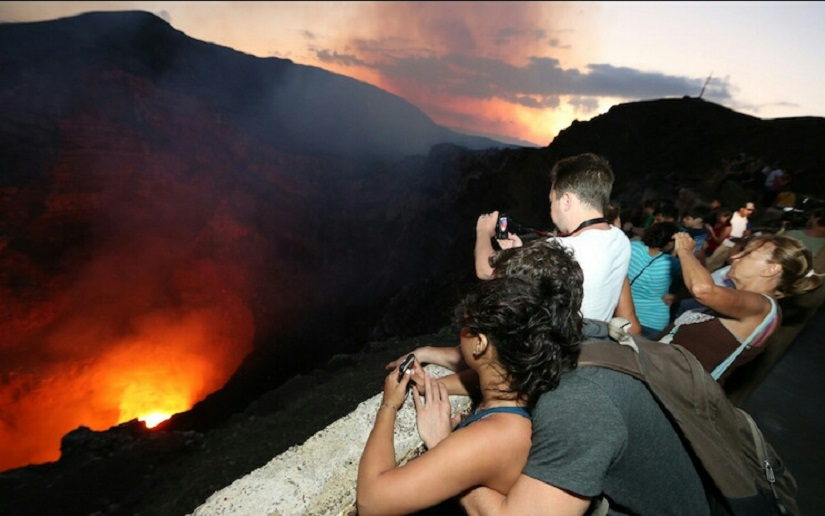
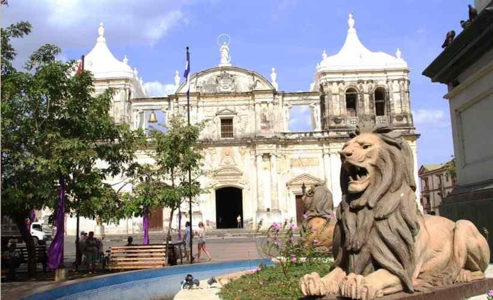
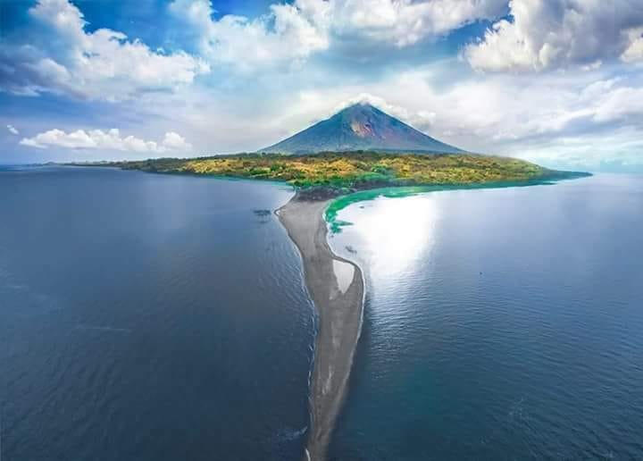

Datos principales:
Extension territorial: 130 373 km²
Moneda: Córdoba de Nicaragua
Forma de gobierno: Republica presidencialista
Censo (2019): 6 351 956 hab.
Independencia declarada en: 15 de septiembre de 1821 (199 años)
Extension territorial: 130 373 km²
Moneda: Córdoba de Nicaragua
Forma de gobierno: Republica presidencialista
Censo (2019): 6 351 956 hab.
Independencia declarada en: 15 de septiembre de 1821 (199 años)
Managua o Santiago de Managua (cuyo nombre oficial es: Leal Villa de Santiago de Managua) es un municipio y la capital de la República de Nicaragua, capital del departamento de Managua, es la capital de Nicaragua y cabecera del municipio y departamento homónimo, así como la sede del gobierno y los poderes del Estado. Se localiza en el occidente de Nicaragua, en la costa suroeste del Lago Xolotlán o Managua, siendo la ciudad más grande del país en términos de población y extensión geográfica y una de las ciudades más grandes de Centroamérica. La ciudad se asienta en un histórico poblado precolombino que fue elevado a villa en 1819, luego a ciudad en 1846, declarada Capital de la Nación en 1852 y fue creado distrito en 2009.
Nicaragua fue poblada a la vez por los Mayas y los Nahuas, quienes ocuparon la depresión central, y por los Miskitos (o Mosquitos), los Ramas y los Sumus, quienes se instalaron sobre la costa del mar Caribe.
Los primeros colonos españoles conducidos por Gil Gonzáles Dávila penetraron en Nicaragua hacia el año 1520 y el país fue agregado a la capitanería general de Guatemala. La dominación española permaneció sin embargo limitada en la costa pacífica.
La independencia fue proclamada en 1821 y, en 1823, Nicaragua devino miembro de las Provincias Unidas de América Central, de las cuales se separó en 1838 para ser una república independiente. Ideal para la construcción de un canal que uniera el océano Pacífico y el Atlántico, la posición de Nicaragua encendió las ambiciones de los británicos, quienes establecieron un protectorado sobre la costa de los Mosquitos, entre 1841 y 1848.
Durante las siete décadas que siguieron a la independencia, los gobiernos liberales y conservadores alternaron en el poder no sin rivalidades. En 1855, William Walker, un aventurero norteamericano a quienes los liberales habían pedido apoyo, invadió el país a la cabeza de un ejército de mercenarios y se autoproclamó presidente. Fue derrocado en 1857.
Los liberales retomaron el poder en 1893 pero, en 1909, un golpe de estado sostenido por los Estados Unidos dio el poder a los conservadores. A partir de 1912, Nicaragua cayó bajo la dependencia de Estados Unidos quienes instalaron sus tropas. Su retirada en 1933 dejó el país a merced del general Anastasio Somoza García, apoyado por la guardia nacional.
En 1934, Augusto César Sandino, jefe de los guerrilleros que habían combatido la presencia norteamericana, fue asesinado mientras participaba de negociaciones por la paz. Somoza se autoproclamó presidente en 1936 e impuso al país su dictadura hasta su asesinato en 1956. Sus hijos le sucedieron, Luis hasta 1963 y Anastasio de 1967 à 1969, año en que fue derrocado. El desvío de los fondos de sostén enviados después del terremoto que destruyó Managua y provocó la muerte de al menos cinco mil personas en 1972 alimentó un fuerte sentimiento de hostilidad respecto al clan Somoza y contribuyó al ascenso del Frente Sandinista de Liberación Nacional, nombrado así en homenaje a César Sandino.
Después del asesinato en 1978 del director del principal diario de oposición, Pedro Joaquín Chamorro, las revueltas estallaron. Los sandinistas tomaron por asalto el Palacio Nacional de Managua y siguió una guerra civil. En julio de 1979, después de varios meses de combates que habrían provocado la muerte de cincuenta mil personas, Anastasio Somoza se vio obligado a dejar el país.
Los sandinistas pusieron en marcha un programa económico de inspiración socialista comprendiendo en particular nacionalizaciones y reformas agrarias. La Constitución de 1974 fue suspendida. Inquietos por ver a los sandinistas ayudar a los rebeldes marxistas de El Salvador, el gobierno norteamericano interrumpió su ayuda económica a Nicaragua en 1981 y financió la oposición de los contras, después impuso al país un embargo comercial, penalizando severamente la economía.
Gracias a negociaciones, entabladas bajo el arbitraje del presidente costarricense Óscar Arias Sánchez en 1987 entre sandinistes y contras, el gobierno sandinista, dirigido desde 1985 por Daniel Ortega, consintió en organizar elecciones libres en 1990 en contrapartida al desarme de los contras.
Ortega fue vencido por Violeta Barrios de Chamorro, viuda del director del diario asesinado en 1978, candidata apoyada por una coalición conservadora, la Unión Nacional de la Oposición (UNO), pero también por los Estados Unidos quienes se comprometieron a poner término a su embargo y aportar su ayuda al país.
Sin embargo, a pesar de la elección democrática de Violeta Chamorro, las rivalidades entre bandas armadas constituidas por antiguos sandinistas y antiguos contras contribuyeron a mantener un clima de inseguridad. Además, la situación económica permanecía muy precaria, y el gobierno debió hacer frente constantemente a movimientos de huelga.
En octubre de 1996, el representante de la derecha liberal, Arnoldo Alemán, fue elegido presidente de la república contra Daniel Ortega. Según los términos de la Constitución, la presidente saliente, Violeta Chamorro, no podía ambicionar un nuevo mandato.
Volcán Masaya: El volcán Masaya está ubicado cerca de la ciudad de Masaya en el departamento del mismo nombre, en Nicaragua a escasos 22 km al sur de la capital del país, Managua. Es uno de los 7 volcanes activos del país.
León: En sus alrededores destacan las Ruinas de León Viejo, una de las primeras ciudades coloniales españolas del continente, sepultada por años bajo las cenizas del Volcán Momotombo. Complementan los atractivos de sus entornos, hermosos escenarios naturales, entre los que figuran la Cordillera de Los Maribios con su conjunto de volcanes y las playas de Poneloya y Las Peñitas hacia el Océano Pacífico.
Isla de Ometepe: Declarada Reserva de la Biósfera por la UNESCO, corresponde a la isla volcánica más grande del Lago Cocibolca o Gran Lago de Nicaragua, escenario de impresionantes paisajes, conformados por sus dos imponentes volcanes, playas con oleaje y reservas naturales.
